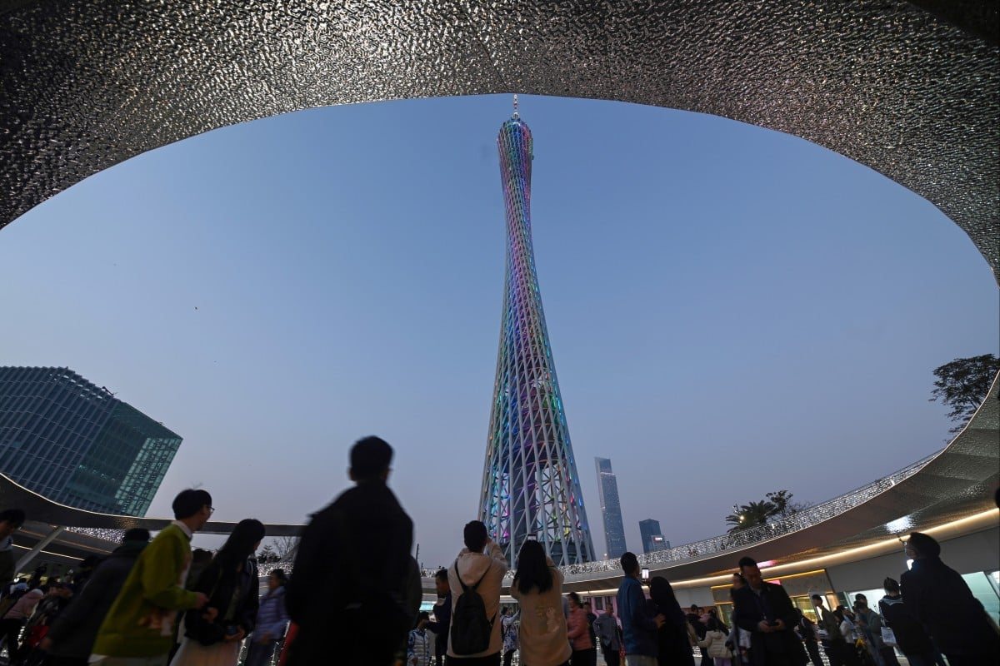

Guangzhou noodle shops, Mandarin in Tibet in focus as China pushes ethnic integration
Many people in the Chinese city of Guangzhou enjoy eating halal noodles, a popular and affordable
option around the country. What they probably do not know is that the local government closely
monitors these restaurants as part of its ethnic integration programme
Guangzhou, a city of 22 million, is using big data to track the activities of its ethnic minority residents in
a model that is likely to be applied across China.
According to the latest official publication on China’s ethnic integration policy, the southern city is the
first in the country to set up a big data system relating to its 830,000 residents who are members of ethnic
minorities.
Published in November by the National Ethnic Affairs Commission (NEAC), the book says the monitoring
includes oversight of halal noodle shops run mainly by Muslim minorities, such as Huis and Uygurs.
The commission researches and formulates China’s ethnic minority policy.
Though it does not explain how this is carried out, the book says the database brings together more than 4
million records and covers every ethnic minority individual who rents a flat in the city.

President Xi’s important speeches pave new path for Guangdong-Macao cooperation
Guangdong-Macao cooperation will proceed from the overall national development strategy, while
leveraging the advantages of the “One country, two systems” principle, and will integrate the
quality resources of Guangdong and Macao at a deeper level, ensuring fruitful cooperation as a
result. The Guangdong-Macao Cooperation Joint Conference 2025 was held today in Guangzhou,
Guangdong Province, and was co-chaired by the Chief Executive of the Macao Special
Administrative Region (MSAR), Mr Sam Hou Fai, and the Governor of Guangdong Province, Mr Wang
Weizhong. This year’s meeting was themed around: studying and implementing the important
speeches and instructions of President Xi Jinping; pragmatically promoting multi-field cooperation between
Guangdong and Macao; and comprehensively advancing the construction of the Guangdong-Hong Kong-Macao Greater
Bay Area in its new phase. Also taking part in the meeting were: Deputy Director of the Hong Kong and Macao
Work Office of the Communist Party of China (CPC) Central Committee, Deputy Director of the State Council’s
Hong Kong and Macao Affairs Office, and Director of the Liaison Office of the Central People’s Government in
the MSAR, Mr Zheng Xincong; and Deputy Director of the Third Bureau of the Hong Kong and Macao Work Office of
the CPC Central Committee and of the State Council's Hong Kong and Macao Affairs Office, Mr Wang Jinyu. At
the meeting, the representatives of Guangdong and Macao affirmed that significant phased achievements have
been made in the construction of the Guangdong-Macao Intensive Cooperation Zone in Hengqin, and that the
development work of the Greater Bay Area is being steadily advanced, all under the joint efforts of the
governments of Guangdong and of Macao. Mr Sam shared two points regarding his understanding of President
Xi’s series of important speeches. The first was that Guangdong-Macao cooperation has, over the 25 years
since Macao’s return to the motherland, significantly contributed to the successful practise of the “One
country, two systems” principle in Macao. Guangdong Province had provided substantial support and
assistance to Macao in areas such as ensuring supply of food to the city, as well as secure supplies of
water and electricity.

New NUS Research Institute in Guangzhou partners industry leaders in research, enterprise and talent development
The National University of Singapore Guangzhou Research Translation and Innovation Institute
(NUS GRTII), a collaboration between NUS, the People’s Government of Guangzhou Municipality, and
the China-Singapore Guangzhou Knowledge City Administrative Committee, held the inauguration
ceremony for its new building in Guangzhou, China, this morning. The official opening ceremony
was graced by NUS President Professor Tan Eng Chye; Mr Wang Guilin, Vice Chairman of the
Guangzhou Municipal Committee of the Chinese People's Political Consultative Conference,
Director of Guangzhou Science and Technology Bureau; Ms Xian Yinsong, Director-General, The
People's Government of Huangpu District, Guangzhou, Standing Deputy Director, Administrative
Committee of Guangzhou Development District; and Mr Chen Zhiyong, Deputy Party Secretary of
Huangpu District Committee.
The establishment of NUS GRTII, the university’s fourth overseas research institute in China, follows three
other research institutes set up by NUS – the NUS Suzhou Research Institute, the Tianjin University-NUS Joint
Institute in Fuzhou, and the NUS Chongqing Research Institute. Located within the China-Singapore Guangzhou
Knowledge City, NUS GRTII is the university’s flagship initiative in the Greater Bay Area.
During the official opening celebrations, NUS GRTII inked strategic collaboration agreements with 13 partners
comprising leading Singapore enterprises, Huangpu District companies and other industry players and
organisations. One of the 13 collaborations is with WeRide in autonomous driving technologies, where NUS GRTII
will work with the tech company on research projects in autonomous driving R&D and commercialisation.
The first batch of 9 startups will be incubated within NUS GRTII, located at the institute’s newest
facilities, as part of one of its strategic thrusts to encourage entrepreneurial activities between Singapore
and China. NUS GRTII will provide business incubation, technology transfer and facilitate the
commercialisation of research breakthroughs benefitting Singapore, Guangzhou, and the Greater Bay Area.
One of the startups which will commence incubation at NUS GRTII is JN Medsys, an innovative Digital PCR
technology company in Singapore, founded by Dr Johnson Ng. “As an entrepreneur from Singapore, Guangzhou is a
suitable location to start a company due its favourable business environment, strategic location, supportive
government policies, and proximity to Singapore.
Guangzhou, the capital city of Guangdong province, is an important political, economic, industrial, and
cultural center in the South China region.
North of Hong Kong, Macao, and the South China Sea, Guangzhou’s location in the Pearl River Delta has long
secured the city’s position as the southern gate of Mainland China. As the origin of the ancient Chinese
Maritime Silk Road, it was the oldest foreign trading port in Mainland China and the only one that has
never been closed.
Now, as one of the prominent cities included in the Guangdong-Hong Kong-Macao Greater Bay Area (GBA) plan
and a key location on the Belt and Road Initiative (BRI), Guangzhou is an established a global transport
and trade hub and an emerging science and technology innovation center.
Guangzhou boasts of advanced infrastructure, including the third-busiest airport (Guangzhou Baiyun
International Airport) in terms of passenger throughput, the fourth-largest port (Guangzhou Port) in terms
of cargo throughput, and the most well-connected railway network in the Chinese mainland.
The China Import and Export Fair, or Canton Fair, is held in Guangzhou every spring and autumn. A mass of
merchants and foreign enterprises from over 200 countries and regions attend the annual fair.
Guangzhou also has the third largest number of national high-tech enterprises (over 11,000) and is home to
most the province’s university personnel and scientific and technological workers.
The 2021 White Paper on the Business Environment in China released by the American Chamber of Commerce in
South China, confirmed that Guangzhou was the most popular investment destination in the country – the
city having held this title for four consecutive years.
In 2021, Guangzhou attracted investment from 330 Fortune Global 500 companies, with an average annual
growth of 10 percent, and an actual use of FDI amounting to RMB 224 billion (US$33.32 billion).
Guangzhou noodle shops, Mandarin in Tibet in focus as China pushes ethnic integration
Many people in the Chinese city of Guangzhou enjoy eating halal noodles, a popular and affordable
option around the country. What they probably do not know is that the local government closely
monitors these restaurants as part of its ethnic integration programme
Guangzhou, a city of 22 million, is using big data to track the activities of its ethnic minority residents in
a model that is likely to be applied across China.
According to the latest official publication on China’s ethnic integration policy, the southern city is the
first in the country to set up a big data system relating to its 830,000 residents who are members of ethnic
minorities.
Published in November by the National Ethnic Affairs Commission (NEAC), the book says the monitoring
includes oversight of halal noodle shops run mainly by Muslim minorities, such as Huis and Uygurs.
The commission researches and formulates China’s ethnic minority policy.
Though it does not explain how this is carried out, the book says the database brings together more than 4
million records and covers every ethnic minority individual who rents a flat in the city.
New NUS Research Institute in Guangzhou partners industry leaders in research, enterprise and talent development
The National University of Singapore Guangzhou Research Translation and Innovation Institute
(NUS GRTII), a collaboration between NUS, the People’s Government of Guangzhou Municipality, and
the China-Singapore Guangzhou Knowledge City Administrative Committee, held the inauguration
ceremony for its new building in Guangzhou, China, this morning. The official opening ceremony
was graced by NUS President Professor Tan Eng Chye; Mr Wang Guilin, Vice Chairman of the
Guangzhou Municipal Committee of the Chinese People's Political Consultative Conference,
Director of Guangzhou Science and Technology Bureau; Ms Xian Yinsong, Director-General, The
People's Government of Huangpu District, Guangzhou, Standing Deputy Director, Administrative
Committee of Guangzhou Development District; and Mr Chen Zhiyong, Deputy Party Secretary of
Huangpu District Committee.
The establishment of NUS GRTII, the university’s fourth overseas research institute in China, follows three
other research institutes set up by NUS – the NUS Suzhou Research Institute, the Tianjin University-NUS Joint
Institute in Fuzhou, and the NUS Chongqing Research Institute. Located within the China-Singapore Guangzhou
Knowledge City, NUS GRTII is the university’s flagship initiative in the Greater Bay Area.
During the official opening celebrations, NUS GRTII inked strategic collaboration agreements with 13 partners
comprising leading Singapore enterprises, Huangpu District companies and other industry players and
organisations. One of the 13 collaborations is with WeRide in autonomous driving technologies, where NUS GRTII
will work with the tech company on research projects in autonomous driving R&D and commercialisation.
The first batch of 9 startups will be incubated within NUS GRTII, located at the institute’s newest
facilities, as part of one of its strategic thrusts to encourage entrepreneurial activities between Singapore
and China. NUS GRTII will provide business incubation, technology transfer and facilitate the
commercialisation of research breakthroughs benefitting Singapore, Guangzhou, and the Greater Bay Area.
One of the startups which will commence incubation at NUS GRTII is JN Medsys, an innovative Digital PCR
technology company in Singapore, founded by Dr Johnson Ng. “As an entrepreneur from Singapore, Guangzhou is a
suitable location to start a company due its favourable business environment, strategic location, supportive
government policies, and proximity to Singapore.
President Xi’s important speeches pave new path for Guangdong-Macao cooperation
Guangdong-Macao cooperation will proceed from the overall national development strategy, while
leveraging the advantages of the “One country, two systems” principle, and will integrate the
quality resources of Guangdong and Macao at a deeper level, ensuring fruitful cooperation as a
result. The Guangdong-Macao Cooperation Joint Conference 2025 was held today in Guangzhou,
Guangdong Province, and was co-chaired by the Chief Executive of the Macao Special
Administrative Region (MSAR), Mr Sam Hou Fai, and the Governor of Guangdong Province, Mr Wang
Weizhong. This year’s meeting was themed around: studying and implementing the important
speeches and instructions of President Xi Jinping; pragmatically promoting multi-field cooperation between
Guangdong and Macao; and comprehensively advancing the construction of the Guangdong-Hong Kong-Macao Greater
Bay Area in its new phase. Also taking part in the meeting were: Deputy Director of the Hong Kong and Macao
Work Office of the Communist Party of China (CPC) Central Committee, Deputy Director of the State Council’s
Hong Kong and Macao Affairs Office, and Director of the Liaison Office of the Central People’s Government in
the MSAR, Mr Zheng Xincong; and Deputy Director of the Third Bureau of the Hong Kong and Macao Work Office of
the CPC Central Committee and of the State Council's Hong Kong and Macao Affairs Office, Mr Wang Jinyu. At
the meeting, the representatives of Guangdong and Macao affirmed that significant phased achievements have
been made in the construction of the Guangdong-Macao Intensive Cooperation Zone in Hengqin, and that the
development work of the Greater Bay Area is being steadily advanced, all under the joint efforts of the
governments of Guangdong and of Macao. Mr Sam shared two points regarding his understanding of President
Xi’s series of important speeches. The first was that Guangdong-Macao cooperation has, over the 25 years
since Macao’s return to the motherland, significantly contributed to the successful practise of the “One
country, two systems” principle in Macao. Guangdong Province had provided substantial support and
assistance to Macao in areas such as ensuring supply of food to the city, as well as secure supplies of
water and electricity.